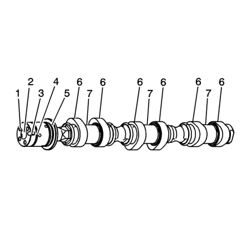
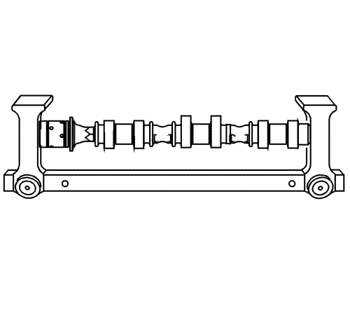
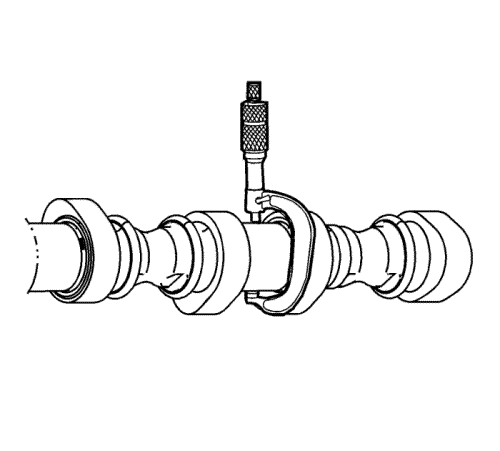
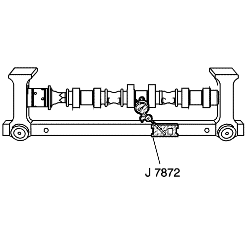
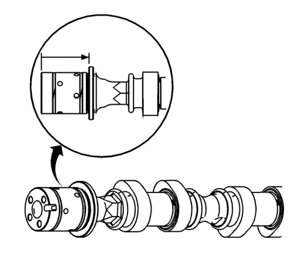
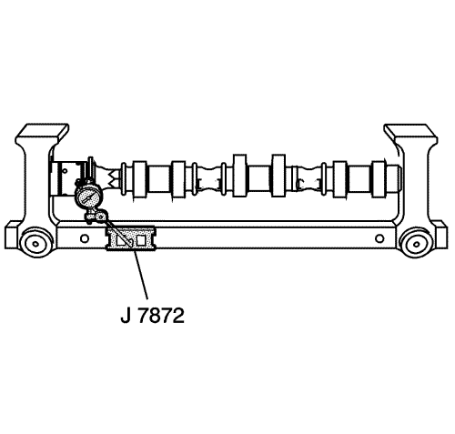
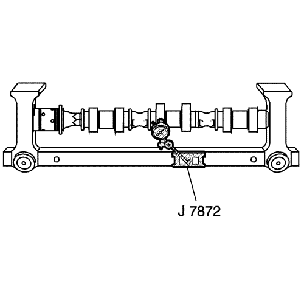
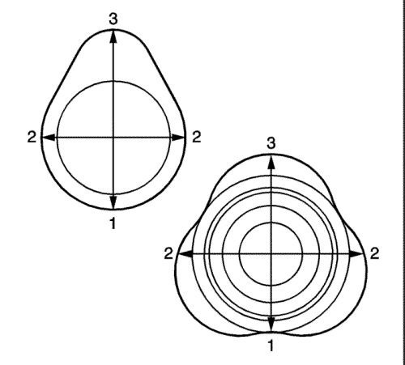

Revisión y limpieza del árbol de levas
Herramientas especiales
GE 7872 Comparador de pie magnético
Si desea informarse sobre herramientas regionales equivalentes, consultar Herramientas especiales .
Procedimiento de limpieza
- Limpie el árbol de levas con disolvente.
Advertencia: Consulte Advertencia, protección ocular en la sección Prólogo
- Secar el árbol de levas utilizando aire a presión.
Examen visual

- Examine si están sucios, bloqueados o tienen suciedad los orificios (1) de alimentación de aceite del árbol de levas al actuador de posición del árbol.
- Examine si está deteriorado el orificio roscado (2).
- Examine si está deteriorada o desgastada la muesca (3) de ubicación del actuador de posición del árbol de levas.
- Revise si están deterioradas las ranuras (4) de sellado del árbol de levas.
- Revise si está deteriorada la superficie (5) de empuje del árbol de levas.
- Revise los lóbulos (6) y muñones (7) del árbol de levas para comprobar lo siguiente:
| • | Estrías o picado excesivo |
| • | Decoloración por sobrecalentamiento |
| • | Deformación de desgaste excesivo, sobre todo los lóbulos del árbol de levas |
- Si ocurre cualquiera de estas posibilidades, sustituya el árbol de levas.
Medición del árbol de levas

- Con el árbol de levas en un lugar fijo adecuado, mídalo para ver su desgaste.

- Mida el diámetro y la falta de redondez de los muñones del árbol de levas con un micrómetro de exteriores. Consultar Especificaciones mecánicas del motor : LF1 .
| • | Si el diámetro es más pequeño que las especificaciones, sustituya el árbol de levas. |
| • | Si la falta de redondez excede las especificaciones, sustituya el árbol de levas. |

- Mida la excentricidad del árbol de levas usando el indicador GE 7872. Consultar Especificaciones mecánicas del motor : LF1 .

- Mida el desgaste de la anchura de empuje del árbol de levas usando un micrómetro de profundidad. Consultar Especificaciones mecánicas del motor : LF1 .

- Mida la excentricidad de la superficie de la pared de empuje del árbol de levas usando el indicador GE 7872. Consultar Especificaciones mecánicas del motor : LF1 .
- Si el árbol de levas está deteriorado o desgastado por encima de las especificaciones, sustitúyalo. No se permite el mecanizado del árbol de levas.

- Mida el desgaste de las levas del árbol de levas usando el indicador GE 7872.

- Coloque el indicador GE 7872 con la punta en el círculo base (1) de la leva.
| 8.1. | Ponga el GE 7872 indicador a cero. |
| 8.2. | Gire el árbol de levas hasta que la punta del indicador esté en el punto más alto (3) del lóbulo. La lectura es la elevación del lóbulo del árbol de levas. Consultar Especificaciones mecánicas del motor : LF1 . |
| 8.3. | Si la medición indicada es mucho más baja que estas especificaciones, sustituya el árbol de levas o se reducirá el rendimiento del motor. |
| © Copyright Chevrolet Europe. All rights reserved |